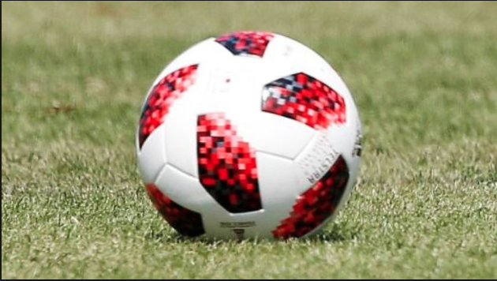
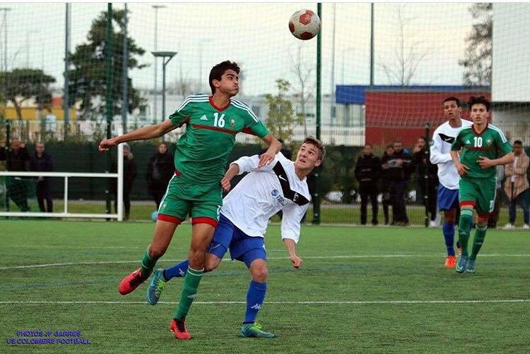

FOOTBALL PAGE
I LOVE FOOTBALL

Summary:
- Definition
- Kind of football
- Me
Why football ?
Football is a family of team sports that involve, to varying degrees, kicking a ball to score a goal. Unqualified, the word football is understood to refer to whichever form of football is the most popular in the regional context in which the word appears. Sports commonly called football in certain places include association football (known as soccer in some countries); gridiron football (specifically American football or Canadian football); Australian rules football; rugby football (either rugby league or rugby union); and Gaelic football.These different variations of football are known as football codes.
There are a number of references to traditional, ancient, or prehistoric ball games played by indigenous peoples in many different parts of the world.Contemporary codes of football can be traced back to the codification of these games at English public schools during the nineteenth century.The expansion of the Briy professional football competitions. During the twentieth century, several of the various kinds of football grew to become some of the most popular team sports in the world
Hi my name is Alexandre CAZAU PEDARRE and i played football for 15years.
I stopped because of the preparatory class but I continue to follow and appreciate this sport it's a real passion.
Me 3years ago

We should all play football
Thanks for reading,
Have a good day.